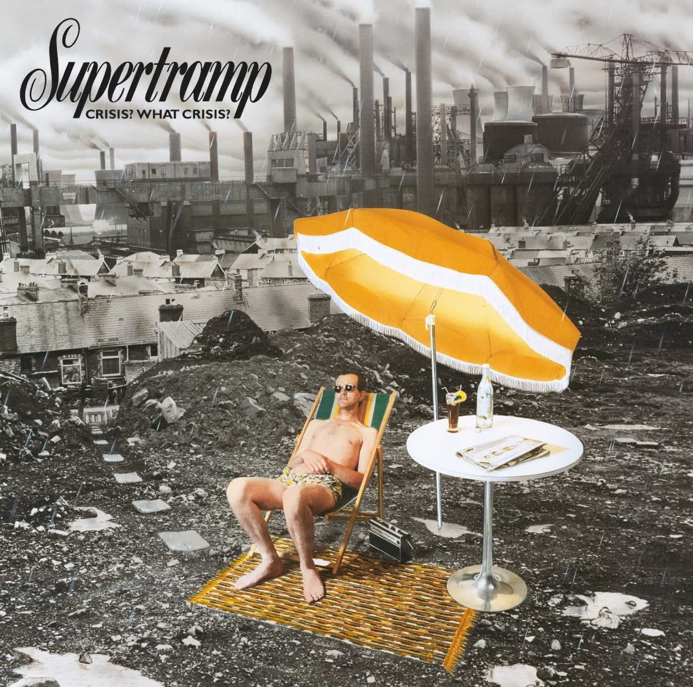

I can't help but remember the title of one of the best-known albums by the British band Supertramp from 1975, to be able to compare it with the economic situation that we are experiencing.
Have a look on the cover of the album. An industrial background image full of smoke that describes an environment that is anything but healthy, a blackish sky that hardly lets the sun see, and in the middle of a garbage dump, a man in a bathing suit , relaxed in a hammock under an umbrella the color of the sun that cannot be seen anywhere on the cover. Elements that do not fit with this gloomy environment, a drink, a newspaper, the man in a bathing suit listening to music under the umbrella with sunglasses, in order to protect himself from an absent sun masked by industrial pollution.

This subject asks where the crisis is, because from his particular and biased point of view, there is no crisis and, if there is, he cares little.
To anyone who is minimally realistic, this policy of kicking ourselves or locking ourselves in our microclimate trying to ignore what surrounds us seems to be a wrong and somewhat suicidal way of acting.
However, it is true that maintaining a degree of optimism, thinking that what we are experiencing now is transitory and that better times will come, is what on many occasions has maintained the levels of consumption and activity in our economy. Living up to date has saved the situation, our numbers and having a low marginal propensity to save and antagonistically high consumption has kept businesses going and saved not a few jobs.
But we are financiers. We have to understand what is happening and, although it is difficult for us to understand that irrational optimism that we sometimes see not only in our surroundings but also in our leaders, it is appropriate that we go a little further and leave the ostrich attitude far away.
Reality is very stubborn and always arrives, so a quick macro and microeconomic judgment of our environment reveals tremendously worrying data that forces us to be prepared for the worst because we always are for the best.
The slowdown in growth has brought with it unprecedented global inflation, causing a tightening of financial conditions and reducing the appetite for risk on the part of traditional financiers. A very complicated future scenario is expected due to the high uncertainty that leads one to think of a possible economic recession.
One only has to look at the behavior of indicators such as car sales figures, impacted by the logistics crisis, energy prices and from a macro perspective, by the level of interest rates or unemployment that accompanied by the aforementioned Rising inflation leads to stagnant inflation that is always difficult to manage.
Therefore, there are not a few elements that lead us to think that this unflattering reality is not far from arriving. Without intending to be exhaustive:
This long series of adverse indicators generates tension and volatility in financial markets that do not favor credit at all.
And if this, in what we find outside our companies, when we look inside we can appreciate various reasons for concern:
It is for all this, that more than ever, the company financier must spend time diagnosing the situation and not make mistakes in it. This time spent is not under any circumstances or wasted time, but rather allows you to "focus the shot" and concentrate on what is relevant, leaving the accessories for the background.
It is not only about looking for internal improvement to be profitable, it is about working in an organized way to challenge stagnation and look for a new way of doing things by reacting to changes and adverse circumstances that, although our environment denies that are approaching, deep down we all know that it is very possible that they are just around the corner.
Winston Churchill said: “I never worry about action, but only about inaction”
Let's apply this maxim in our daily work and let's not opt for the image of the cover of the famous Supertramp album, because that attitude could cost us dearly.
José Carlos Cuevas
Partner at EY-Parthenon Strategy and Transactions
Chair of the Treasury Commission at ASSET
Member of the Board at European Association of Corporate Treasurers (EACT)
Member of the Board at International Group of Treasury Associations (IGTA)
Member of the Oversight Committee at EMMI (European Money Markets Institute)
.png "The LEI: Unlocking the Benefits of a Secure Payments Ecosystem for Corporate Treasurers")
The EACT has been advocating for a digital identity for Corporates for many years now. We believe that, Corporates, like individuals, must have a single identity which help them to identify itself and identify third parties as well in this digital era.
Read.png "LkSG Relevant for Treasury on a Case-by-case Basis")
The Supply Chain Due Diligence Act (LkSG) creates the legal framework to improve the protection of the environment and human rights along German supply chains. GACT spoke to Dr. Julia Sitter (White & Case LLP) about the relevance and need for action by treasury departments.
Read.png "CMU, The Come-Back!")
The Capital Market Union, which was one of the main objectives of the Vander Leyen Commission, is back in the limelight, and is likely to become a priority for the next Commission next summer.
Read.png "What Will be the Corporate Treasurer's Priorities for 2024?")
General insights into the common priorities of corporate treasurers that will still be relevant in 2024.
Read.png "Counterparty Risk Assessment by Treasurers")
François Masquelier lists some comprehensive steps to best assess counterparty risks.
Read